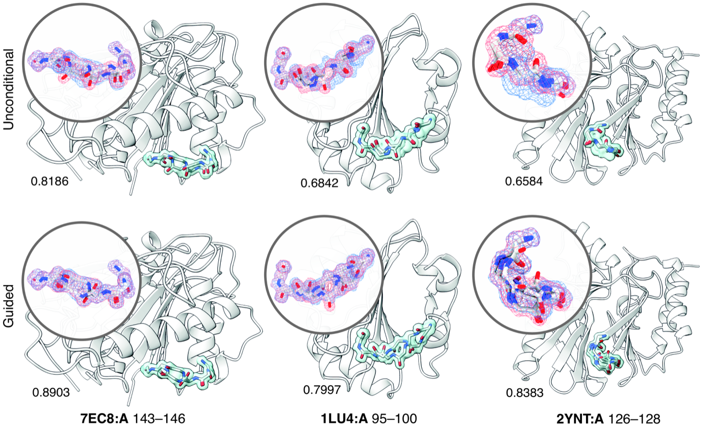
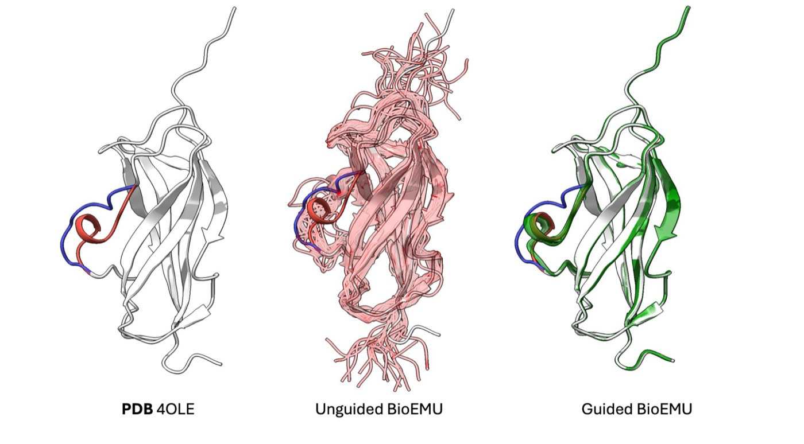
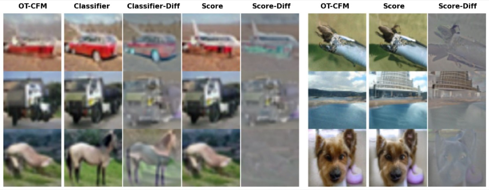

Publications
Each card is one project. Projects that appeared at several venues (workshop, conference, journal) are bundled on a single page. Also on Google Scholar.
Guiding generative models with experimental observations
One line of work: we first introduced joint ensemble guidance on crystallographic electron densities, Experiment-guided AlphaFold extended it to NMR and cryo-EM observations, and Seek and You Shall Fold removed the need for gradients.
-

MLSB @ NeurIPS 2024 · SpotlightGenerative modeling of protein ensembles guided by crystallographic electron densities
Non-i.i.d. diffusion guidance: couple an ensemble through a shared likelihood to recover alternate backbone conformations from raw electron density.
Read the full story → -
 GEM @ ICLR 2025 · SpotlightICML 2025Nature Biotechnology 2026
GEM @ ICLR 2025 · SpotlightICML 2025Nature Biotechnology 2026Experiment-guided AlphaFold
Posterior sampling with AlphaFold3 as a prior and NMR, X-ray and cryo-EM likelihoods. Fits the NOE restraints used for guidance better than deposited ensembles in 70 of 91 targets.
Read the full story → -

MLSB @ EurIPS 2025Seek and You Shall Fold
Gradient-free guidance: a genetic algorithm in a diffusion model's latent space optimizes black-box objectives such as NMR restraints.
Read the full story →
Representations, flow models and scientific ML
-
 GenBio @ ICML 2025ICLR 2026
GenBio @ ICML 2025ICLR 2026Representing local protein environments with machine learning force fields
Force-field embeddings as transferable protein representations, with structured geometry, likelihoods, and state-of-the-art chemical shift prediction.
Read the full story → -

arXiv 2026Correcting Flows with Marginal Matching
A learned corrector targeting reversed-ODE marginals. One extra call takes CIFAR-10 FID from 4.34 to 3.45, matching about 20 more RK4 evaluations.
Read the full story → -
 arXiv 2026MNRAS · Review pending
arXiv 2026MNRAS · Review pendingMoving Beyond the DRW Model: Learning Quasar Variability with Generative Models
A controlled study on simulated quasar light curves: what happens when the noise model is learned with flow matching, and where it breaks.
Read the full story →
* Equal contribution.